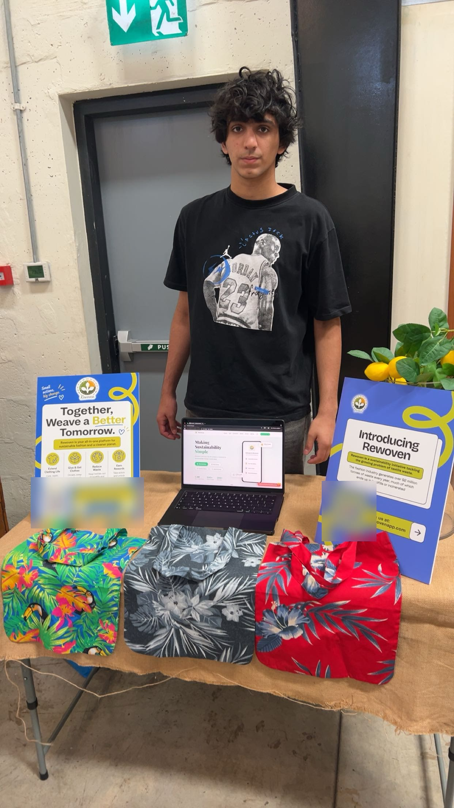
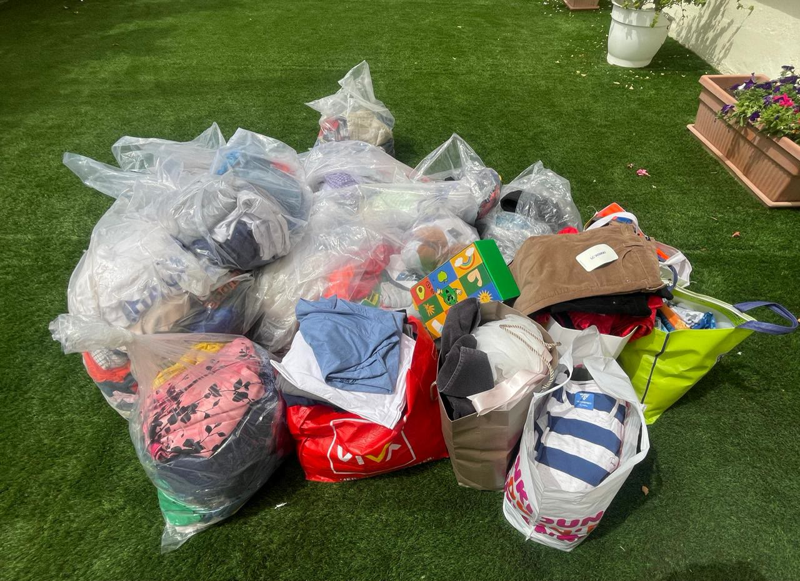
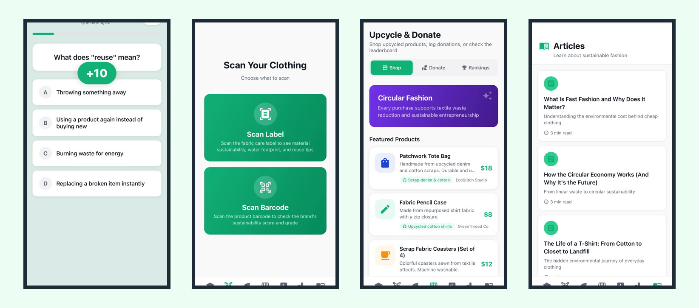

Rewoven
- 1,000+ garments donated
- USD 8,000+ raised for charity
- 200+ app downloads
I founded Rewoven in August 2024 to reduce textile waste and to raise awareness of circular fashion among young people. It started in a garment factory in Egypt, where a sustainability audit showed me how much fabric ends up as waste. My schoolmate Aarush Vij leads our work with schools and partners, while I develop and scale the Rewoven app and website.
In partnership with the factory, I began turning its fabric offcuts into bookmarks and bags, which were sold at my school as part of a student-run initiative. I led the product design, branding, and marketing, and the proceeds of more than USD 8,000 were donated to charity.
Through our donation drives, we have collected more than 1,000 items of clothing from homes in the UAE and donated them through Beit Al Khair Society. For our drives, I analyzed the volume, location, and condition of the donated clothes, and I used this data to plan our collection routes.
I then spent about five months building the Rewoven app. It scans clothing labels to show a garment's fabric type, water footprint, and carbon impact, and it lets people log the clothes they donate. The app and website also include educational articles, a sustainable fashion explorer that grades 635 fashion brands, and an upcycle marketplace. So far, the app has been downloaded more than 200 times.
I first designed the app as a game, with quizzes, daily challenges, and a virtual planet that thrives when people keep up their habits. However, my survey later found that only seven of the 55 respondents chose quizzes and challenges, and only three chose leaderboards. This showed me that Rewoven needs more practical tools that make donating and reusing clothes easier, and these are what I would like to build next.
We also partnered with Fashion Revolution UAE and presented Rewoven during Fashion Revolution Week in April 2026. Additionally, I taught a workshop on textile waste at Fashion Revolution UAE for children aged 7 to 12. At a pop-up shop, we showed more than 500 visitors how fabric scraps can be turned into bags and bookmarks.
